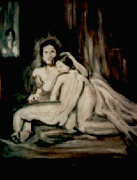

Brushing your eye,
came out.
Embarrassed
to have done that
bent quickly
to retrieve your blue object
under the skirts of the endtable.
When I brought it
up to your dark place
I found you had forgotten
you had ever seen from it,
moved your head aside gently
so to indicate disinterest,
as you do when you are tired
of my brushing of your hair.
Understanding very little but my duty,
went at the other,
in a moment had you
in completed darkness
where you no longer swayed your face
in time to the light of the fire.
Your head raised itself backward, quietly
prepared to never not remember
what would be next.
|
 Todd Swift
Todd Swift